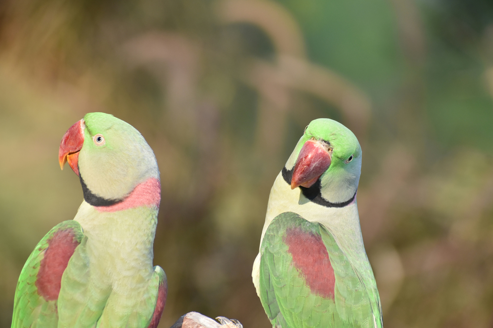

The Alexandrine Parakeet is a large and striking parakeet found across the Indian subcontinent and parts of Southeast Asia. It has predominantly green plumage, a large red bill, and distinctive maroon shoulder patches. Mature males develop a dark neck ring, while females and young birds lack the complete ring. It is an adaptable bird that occurs in forests, woodlands, farmland, plantations, gardens, and urban areas, where it feeds mainly on fruits, seeds, flowers, grains, and buds.